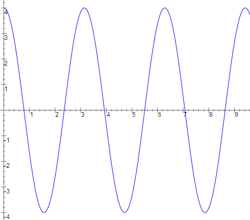
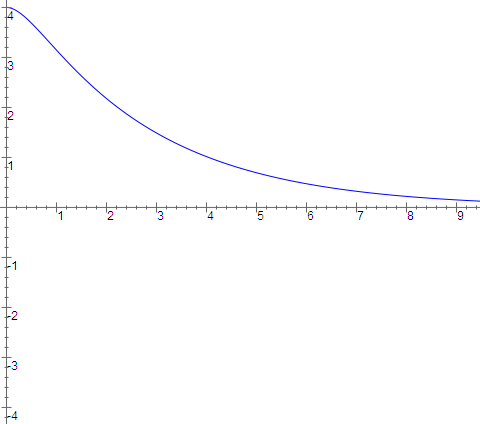
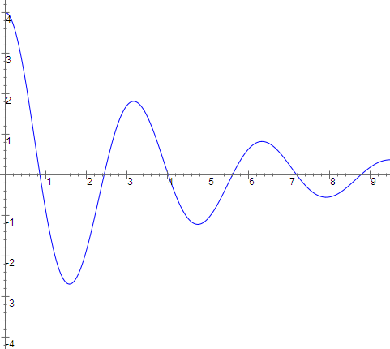
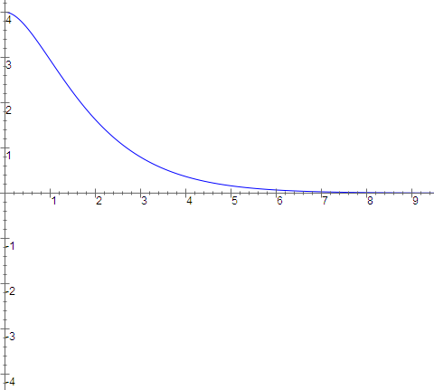
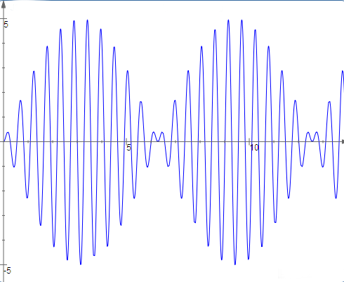
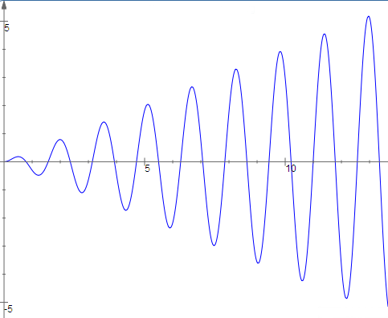
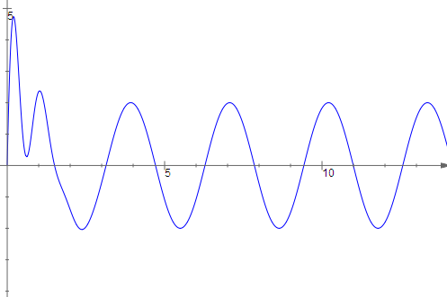

Table of Contents
Applications
Mechanical Vibrations
Consider a mass on a spring. The forces acting on the mass are gravity
with a force $mg$, where $m$ is the mass and $g$ is the acceleration of
gravity $(9.8\text{m}/sec^2)$, the restoring force of the spring with a
force $-kl$, where $k$ is the spring constant, $l$ is how much the
spring is stretched and the negative sign denotes the force is pulling
toward $l=0$, and the damping of the spring (friction) acting with a
force $-cv$, where $c$ is the damping constant, $v$ is the velocity and
the negative sign denotes that the force acts in opposition to the
motion. Now we choose our coordinates for the problem to have $x=0$ at
the equilibrium length of the spring $s$, where $mg=ks$. Note that with
this choice, $l=x+s$. We also choose $x>0$ to be when the spring is
stretched farther down from equilibrium (this is why we use $mg$ for
gravity and not $-mg$). So the total force on the spring is
$$ \begin{align}
mg - kl - cv &= mg - k(s+x) - cv \\
&= mg - ks - kx - cv \\
&= -kx -cv
\end{align} $$
But by Newton's second law of motion, $\text{force} = ma $ where $m$ is mass
and $a$ is acceleration. So
$$ ma = -kx - cv $$
Now if we remember that velocity is the derivative of position with respect to
time and acceleration is the second derivative of position with respect to
time, we have our final equation for "free" motion of a spring-mass system
$$ m\frac{d^2x}{dt^2}+c\frac{dx}{dt}+kx=0 $$
where $m$ is mass, $c$ is the damping constant, $k$ is the spring constant,
$x$ is position and $t$ is time.
This basic setup will be useful for most mechanical vibration problems, but
typically with an additional term. The equation for "free" motion above assumed
that the only force acting on the mass
was gravity and we could choose coordinates to allow us to ignore that force.
However, in many situations there may be an external force $F(t)$ involved which
we can't (and wouldn't want to) ignore. For example, a running motor will cause
vibrations in attached parts. This leads to the equation for "forced" motion of
a spring-mass system
$$ m\frac{d^2x}{dt^2} + c\frac{dx}{dt} + kx = F(t)$$
where $F(t)$ is the external force. In this chapter we will mainly consider periodic external
forces of the form $F(t)=A\cos(\omega t)$, which are very common in practice.
LRC Circuits
Electric circuits are analyzed using exactly the same equations as
spring--mass systems. We look at the current $I$ flowing through the
circuit, where $\displaystyle I=\frac{dQ}{dt}$ where $Q$ is charge. $Q$ is
measured in coulombs while $I$ is measured in amperes, which are
coulombs/second. The "electromotive force" $E$ powering
the circuit is measured in volts (note that pressure may be a better
metaphor).
 An LRC circuit with an AC power source includes the
following components. As current flows through the loops of a coil,
the spinning current induces a magnetic field. If the current flow
changes, then the magnetic field changes. A changing magnetic field inside
the loops will then induce a current. This acts like mass in a spring-mass
system, since the induced current opposes the change in the current, just
as mass measures opposition to change in momentum. A coil has "inductance"
$L$, which is measured in henrys. Voltage drop across a coil is given by
$\displaystyle V=L\frac{dI}{dt}=L\frac{d^2Q}{dt^2}$.
A resistor does what it sounds like, it resists the flow of
current. Resistance $R$, measured in ohms, plays the role of friction. The
voltage drop across a resistor is $\displaystyle V=RI=R\frac{dQ}{dt}$.
A capacitor stores charge on parallel plates separated by a
dielectric.
The amount of charge is proportional to the impressed voltage, $Q=CV$, or
$\displaystyle V=\frac{1}{C}Q$. Capacitance $C$ is measured in farads,
which are coulombs per volt. Since the
charge will be released as the voltage drops, the capacitor plays the role
of the spring, storing energy and then releasing it later. In fact, $1/C$
is called the "elastance" of the circuit and plays the role of the spring
constant (and has units of "daraf", though reciprocal farad is
the more boring preferred term).
Finally, the AC power source produces an alternating voltage described by
a sinusoidal function, $E(t)=V_0\cos(\omega t)$. $V_0$ is the peak
amplitude and $\omega$ is the circular frequency. Note that when voltages
are given, you typically use the root-mean-square amplitude rather than
the peak amplitude, so a 120 volt supply would correspond to a peak
amplitude of $120\sqrt2\approx 170$ volts. Similarly, frequency is
usually given in Hertz, which are cycles per second, while circular
frequency is measured in radians per second, so a 60 Hertz supply has
$\omega=60\times2\pi=120pi$ since 2π radians equals one full cycle.
An LRC circuit with an AC power source includes the
following components. As current flows through the loops of a coil,
the spinning current induces a magnetic field. If the current flow
changes, then the magnetic field changes. A changing magnetic field inside
the loops will then induce a current. This acts like mass in a spring-mass
system, since the induced current opposes the change in the current, just
as mass measures opposition to change in momentum. A coil has "inductance"
$L$, which is measured in henrys. Voltage drop across a coil is given by
$\displaystyle V=L\frac{dI}{dt}=L\frac{d^2Q}{dt^2}$.
A resistor does what it sounds like, it resists the flow of
current. Resistance $R$, measured in ohms, plays the role of friction. The
voltage drop across a resistor is $\displaystyle V=RI=R\frac{dQ}{dt}$.
A capacitor stores charge on parallel plates separated by a
dielectric.
The amount of charge is proportional to the impressed voltage, $Q=CV$, or
$\displaystyle V=\frac{1}{C}Q$. Capacitance $C$ is measured in farads,
which are coulombs per volt. Since the
charge will be released as the voltage drops, the capacitor plays the role
of the spring, storing energy and then releasing it later. In fact, $1/C$
is called the "elastance" of the circuit and plays the role of the spring
constant (and has units of "daraf", though reciprocal farad is
the more boring preferred term).
Finally, the AC power source produces an alternating voltage described by
a sinusoidal function, $E(t)=V_0\cos(\omega t)$. $V_0$ is the peak
amplitude and $\omega$ is the circular frequency. Note that when voltages
are given, you typically use the root-mean-square amplitude rather than
the peak amplitude, so a 120 volt supply would correspond to a peak
amplitude of $120\sqrt2\approx 170$ volts. Similarly, frequency is
usually given in Hertz, which are cycles per second, while circular
frequency is measured in radians per second, so a 60 Hertz supply has
$\omega=60\times2\pi=120pi$ since 2π radians equals one full cycle.
Examples of Free Motion
We now solve the free motion equation in general and see what we can deduce about the
behavior of such a system. First we assume there is no damping $(c=0)$. Then
the general solution is
$$ \begin{align}
x(t) &= a \cos(\omega t) + b \sin(\omega t) \\
&= A \cos(\omega(t+\phi))
\end{align} $$
depending on which way you want to write the formula. Here
$\omega$ is $\sqrt{k/m}$. This is simple
harmonic motion with amplitude $A$, circular frequency $\omega$ and phase
shift $\phi$.

Next, suppose $c>0$. Here there are three different possibilities, depending
on
whether the discriminant $c^2 - 4km$ is positive, negative or zero. We look
for a
solution in the form $e^{rt}$ and obtain
$$(mr^2+cr+k)e^{rt} = 0 $$
from which we find
$$r=\frac{-c\pm\sqrt{c^2-4km}}{2m}$$
Now if the discriminant is positive, this equation has two distinct real
roots,
call them $r_1$ and $r_2$. The general solution is then
$c_1e^{r_1t}+c_2e^{r_2t}$.
We note that $r_1$ and $r_2$
will both be negative, so the solution will decay to 0 monotonically. In
this case the system is
said to be overdamped.

If the discriminant is negative,
then the roots will
be complex conjugates. The real part of the roots will be $-c/2m$ which is
negative so the solution will still decay to 0, but now it will oscillate
while doing so, since the imaginary part of the roots will give rise to a
factor of $\cos(\omega(t+p))$ in the solution. In
this case the system is
said to be underdamped.

Finally, it
is possible for the discriminant to be zero. Here we have a double root at
$-c/2m$ and the general solution will be
$c_1e^{(c/2m)t}+c_2te^{(c/2m)t}$
This solution will converge monotonically to 0. In
this case the system is
said to be critically damped. Note that there is no obvious distinction
between the graph of an overdamped and a critically damped spring.

Examples of Forced Motion
We start with the undamped case $(c=0)$.
We have solved the homogeneous
problem in the previous section, obtaining $A\cos(\omega_0(t + \phi))$
where $\omega_0 =\sqrt{k/m}$
is called the natural
frequency of the spring-mass system. We will now consider the particular
solution of
$$m\frac{d^2x}{dt^2}+kx=F_0\cos(\omega t)$$
Since $F_0 \cos(\omega t) = \Re[F_0 e^{i\omega t}]$, we will try to find the
particular solution for
the complex problem and then take the real part. So we guess
$$ \begin{align}
z&=ae^{i\omega t} \\
z'&=i\omega ae^{i\omega t} \\
z''&=-\omega^2ae^{i\omega t}
\end{align} $$
So we get
$$ \begin{align}
-m\omega^2ae^{i\omega t}+kae^{i\omega t}&=F_0e^{i\omega t} \\
a&=\frac{F_0}{-m\omega^2+k}=\frac{F_0}{m(\omega_0^2-\omega^2)}
\end{align} $$
and taking the real part of $ae^{i\omega t}$ yields a particular solution
of
$$ x(t)=\frac{F_0}{m(\omega_0^2-\omega^2)}\cos(\omega t)$$
Note that the particular solution has the same frequency as the forcing
function but that the amplitude is divided by a factor $m(\omega_0^2 -
\omega^2)$.
We would expect to see that mass would be inversely proportional to the
displacement generated by a fixed force, but it may be something of a surprise
that the frequency plays such a large role. The underlying physical intuition
is that the spring wants to oscillate at its natural frequency, and the closer
the forcing function is to the natural frequency, the more the forcing
function and the spring will work together and not in opposition, hence the
larger amplitude of the response. The general solution is then
$$x(t)=\frac{F_0}{m(\omega_0^2-\omega^2)}\cos(\omega
t)+A\cos(\omega_0(t+\phi))$$
If we plot out the solution curves, we will see the phenomenon of beats
arising.
This is most easily seen if $\omega$ and $\omega_0$ are close. Then
the amplitude
of the solution will steadily increase as the forcing function pours ever
greater amounts of energy into the system. However, if the forcing function
is not exactly in sync with the natural frequency of the system (that is
$\omega\ne\omega_0$) then eventually the forcing function
will become out
of phase with the natural frequency. Then the force applied to the system will
reduce the amplitude and the "beat" will die off. At the end of the beat, the
forcing function will have worked its way back in sync with the natural
frequency and the pattern will start all over again.

Of course, if $\omega=\omega_0$ , then we have divided by zero and our
solution is not valid
for this case. Here, we get a particular solution of the form
$$x(t)=\frac{F_0}{2m\omega_0}t\sin(\omega_0t)$$
You may check that this is indeed a particular solution.
Note that in this case, the amplitude grows linearly with $t$. Since the
forcing
function and the natural frequency are exactly in sync, the forcing function
always acts to add energy to the system and the amplitude grows without bound,
at least mathematically. In real life, the system will tear itself apart
eventually as the amplitude gets too large. This is the phenomenon of
resonance.

Next we consider what happens when we include damping $(c>0)$. We will
consider
just the underdamped case (the overdamped is similar). The homogeneous
solution is
$$
x(t)=Ae^{-(c/2m)t}\cos(\omega_1(t+\phi))
$$
where $\omega_1 = \sqrt{\omega_0^2-(c/2m)^2}$ and $\omega_0=\sqrt{k/m}$ is
the natural frequency.
Note that if $c$ is small
then the spring-mass system oscillates with
circular frequency $\omega_1$ very close to the natural frequency
$\omega_0$.
Now when we
find the particular solution, we again use $F_0 \cos(\omega t)=\Re[F_0
e^{i\omega t}]$ and solve for
a particular solution to the complex problem and take the real part. We guess
$$\begin{align}
z &= ae^{i\omega t} \\
z' &= i\omega ae^{i\omega t} \\
z'' &= -\omega^2 ae^{i\omega t}
\end{align} $$
and so we find
$$ \begin{align}
-m\omega^2ae^{i\omega t}+ci\omega ae^{i\omega t}+kae^{i\omega t}
&=F_0e^{i\omega t} \\
\left((k-m\omega^2)+ic\omega\right)ae^{i\omega t}
&=F_0e^{i\omega t} \\
a&=\frac{F_0}{(k-m\omega^2)+ic\omega}\\
a&=\frac{F_0}{m(\omega_0^2-\omega^2)+ic\omega}
\end{align} $$
Here there is no danger of dividing by zero. Even if $\omega_0=\omega$, $c>0$
so the denominator is non--zero. Now let
$R = \sqrt{m^2(\omega_0^2-\omega^2)^2+c^2\omega^2}$
be the modulus of $m(\omega_0^2 - \omega^2 ) + ic\omega$ and let
$\Phi = \arctan(c\omega/[m(\omega_0^2 - \omega^2 )])$ be the argument of
$m(\omega_0^2-\omega^2)+ic\omega$. Then the real
particular solution will be
$$\Re\left[\frac{F_0}{Re^{i\Phi}}e^{i\omega t}\right]
=\Re\left[\frac{F_0}{R}e^{i(\omega t-\Phi)}\right]
=\frac{F_0}{R}\cos(\omega t-\Phi)$$
The general solution is
$$\frac{F_0}{R}\cos(\omega t-\Phi)+e^{-ct/2m}A\cos(\omega_1t+\phi)$$

The first term (the particular solution) is called the steady state solution
and the second term (the homogeneous solution) is called the transient
solution. Note that the amplitude of the transient term decays exponentially,
so it will become unimportant as $t$ grows large, hence the name transient.
The steady state term has a constant amplitude, hence the name steady
state.
With positive damping, $R$ will never be zero so the solution will not have
amplitude that increases without limit. On the other hand, if
$\omega_0=\omega$ then $R=c$
and if $c$ is small, it is still possible for the response to be sufficiently
large to break the spring-mass system.
©1994-2026 Andrew G. Bennett